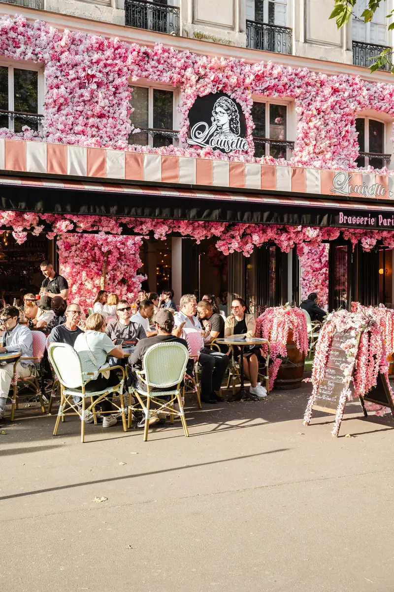
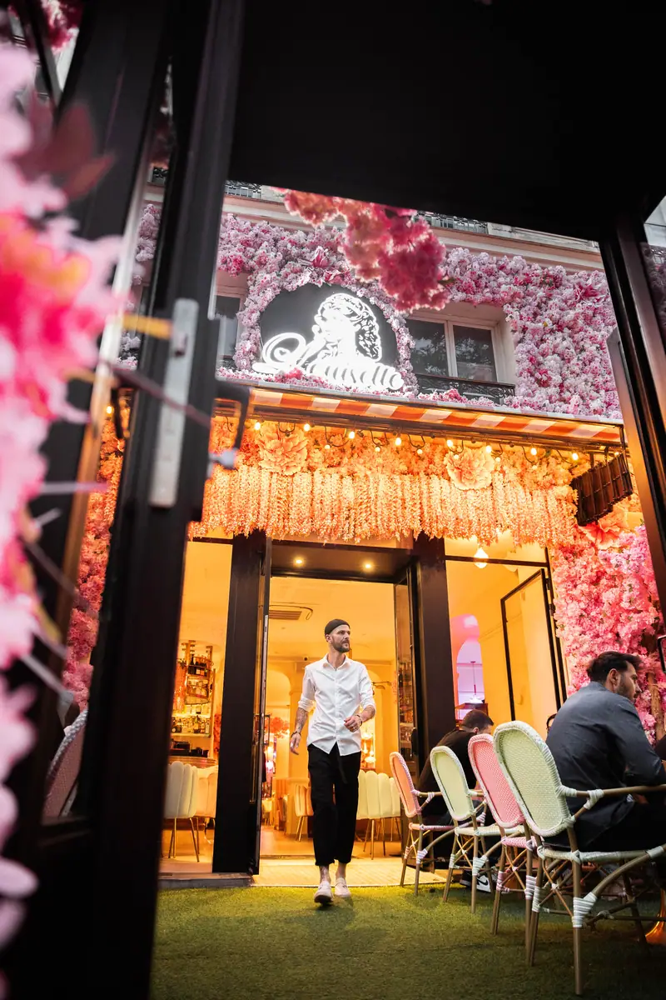
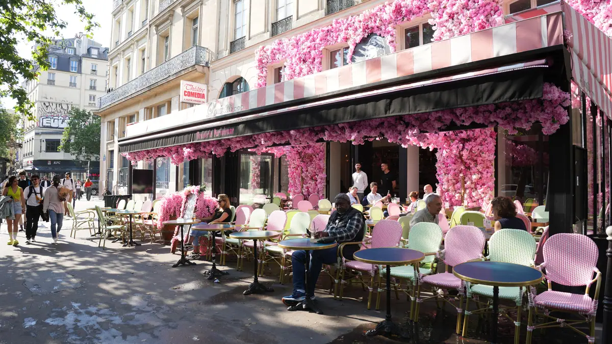

Infos pratiques.
Tout ce qu'il faut savoir avant de venir chez Louisette, en une page. Adresse, horaires, transports, téléphones. Rien d'autre.
Nous trouver



Où nous trouver.
La Maison Louisette se trouve au 8 boulevard Saint-Denis, 75010 Paris, sur les Grands Boulevards, au pied de la Porte Saint-Denis. La station de métro la plus proche est Strasbourg-Saint-Denis, desservie par les lignes 4, 8 et 9.
| Adresse | 8 boulevard Saint-Denis, 75010 Paris |
|---|---|
| Métro | Strasbourg-Saint-Denis — lignes 4, 8 et 9, sortie boulevard Saint-Denis |
| Horaires | Ouvert tous les jours de 8 h à 2 h, en service continu |
| Réserver | 01 40 34 20 57 ou en ligne |
| Groupes et privatisation | 09 74 64 03 84 — voir la page groupes |
| Courriel | contact@louisette-paris.com |
| Paiement | Cartes bancaires et espèces |
Les horaires, jour par jour.
Louisette est ouverte sept jours sur sept, de 8 h à 2 h du matin. Le service ne s'arrête pas entre le déjeuner et le dîner : la cuisine tourne en continu, du premier café au dernier cocktail.
| Lundi | 8 h – 2 h |
|---|---|
| Mardi | 8 h – 2 h |
| Mercredi | 8 h – 2 h |
| Jeudi | 8 h – 2 h |
| Vendredi | 8 h – 2 h |
| Samedi | 8 h – 2 h |
| Dimanche | 8 h – 2 h |
Venir, et repartir.
En métro
Descendez à Strasbourg-Saint-Denis (lignes 4, 8 et 9) et prenez la sortie boulevard Saint-Denis : la terrasse est à quelques mètres. Les lignes 8 et 9 desservent également Bonne-Nouvelle, à cinq minutes à pied.
À pied depuis les salles de spectacle
Le quartier des théâtres commence devant la porte. Le Grand Rex est à trois minutes, le Théâtre de la Renaissance et la Porte Saint-Martin à deux. Le détail des salles et des distances est sur la page quartier des théâtres.
Le soir, tard
La cuisine sert jusque tard et la maison ferme à 2 h. Les lignes 4, 8 et 9 circulent jusqu'à environ 1 h 15 en semaine et 2 h 15 les vendredis, samedis et veilles de fête.
Réserver, ou passer.
Pour une table de deux à six personnes, la réservation en ligne est le plus rapide. Au-delà, ou pour une privatisation, appelez la ligne groupes au 09 74 64 03 84 ou passez par la page groupes.
Une allergie ou une intolérance ? Signalez-la à votre arrivée : l'information sur les quatorze allergènes à déclaration obligatoire est tenue à votre disposition en salle.
Votre table vous attend.
Ouvert tous les jours de 8 h à 2 h, 8 boulevard Saint-Denis.